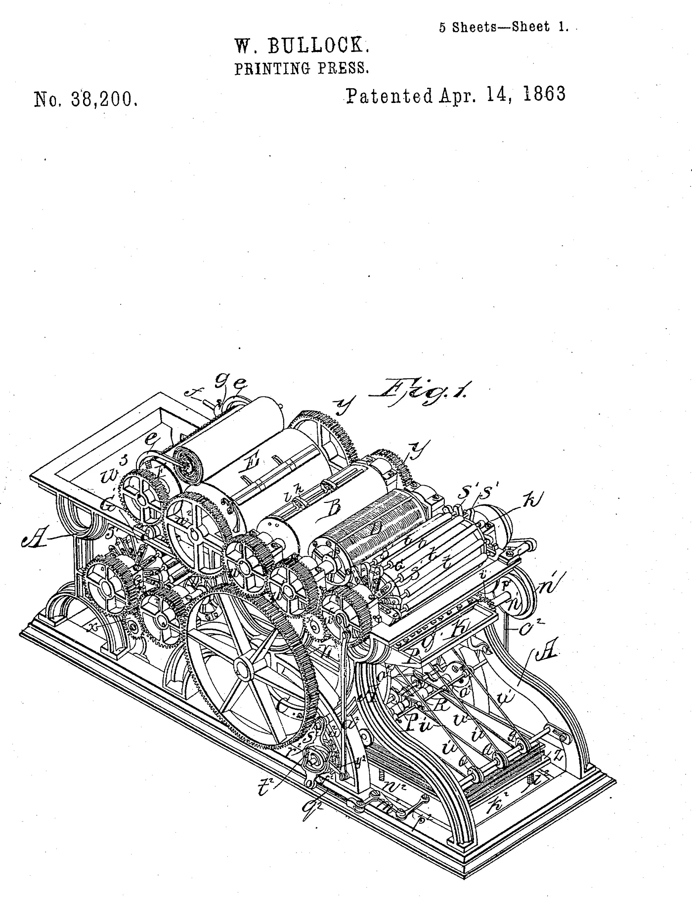
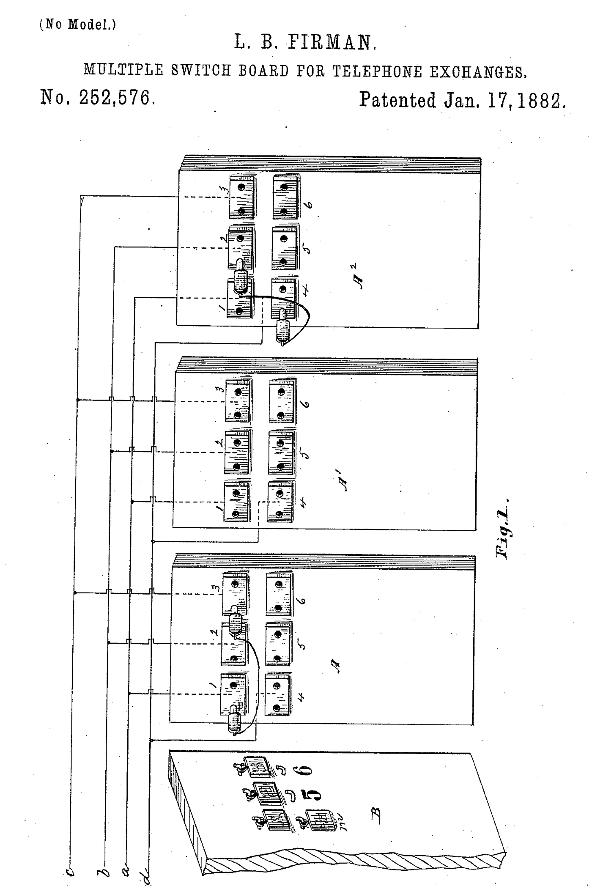
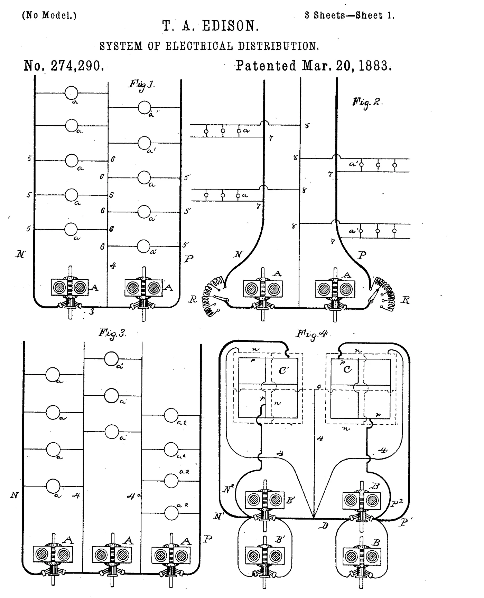
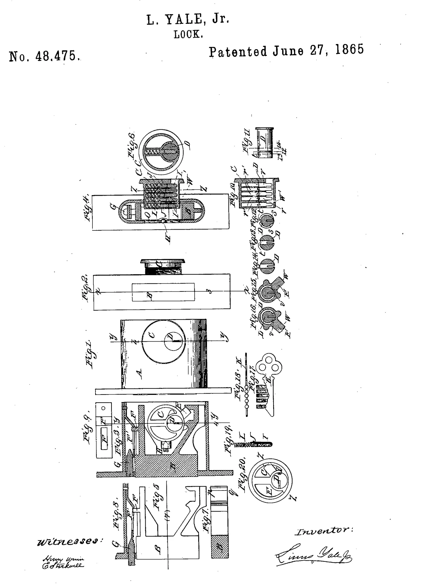
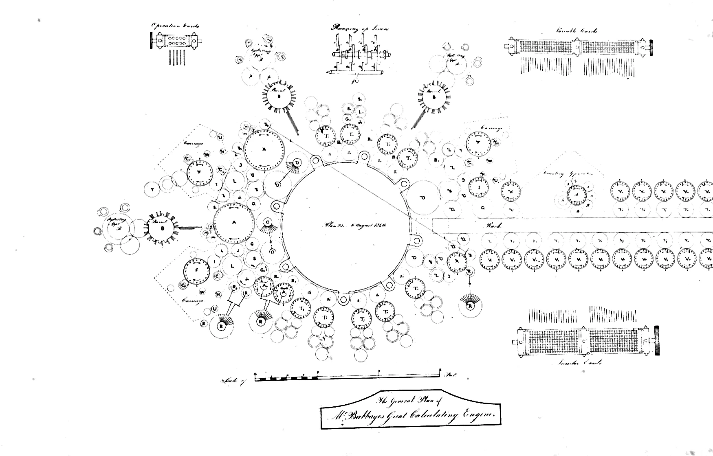
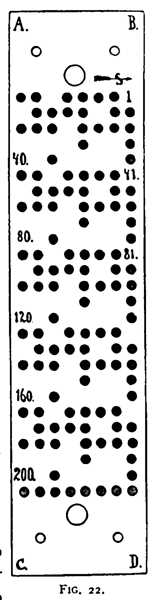
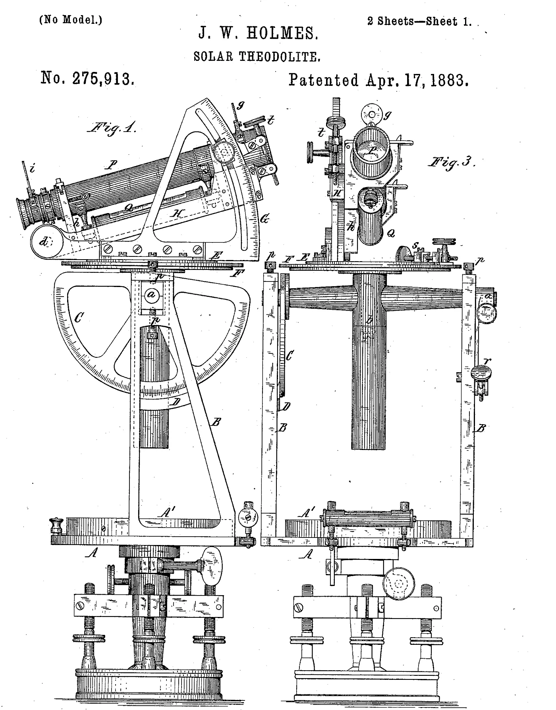

Wajih Mansouri
Studio · Tunis
We draw it before we build it.
Websites, apps, platforms, security and AI, engineered to the millimetre, tested until nothing breaks, and run long after launch.

Fig. 1 · US Patent 186,787 · 1877
Every phone starts on paper.
This is the drawing filed with Alexander Graham Bell’s telephone patent, granted on 30 January 1877. It is one of the first drawings of a telephone ever published, so the story of the phone starts here.
Plate: US Patent 186,787, sheet 1 · public domain
Fig. 1 · From the patent
1877
The phone, 1877 to today
Apps and phones
The whole business in one pocket.
Six layers, each drawn before it is built: what the hand meets, every screen, the flow, the rules, the data and the lock.
Concept sheet LOFTHAUL, a drone-delivery dispatcher. Made up to show the range, not a client.
Principles
Trace-
Principle 01 of 04
Exact.
Every screen is drawn and measured before a line of code.
Fig. 2.1 · Leonardo da Vinci, Codex Madrid I, f. 16r, 1490s A spring drum whose toothed ring turns a cone, evening out a clock spring’s pull as it unwinds. His note above it: “Ogni arte dimanda il suo strumento”, every art demands its instrument.
-
Principle 02 of 04
Felt.
People don’t read software, they feel it. Every tap is tested by hand.
Fig. 2.2 · Leonardo da Vinci, Codex Madrid I, f. 79v, 1490s Lock springs, and a model spring drawn thick at the root and thin at the tip.
-
Principle 03 of 04
Proven.
Most of a build is testing. We break it before your customers can.
Fig. 2.3 · Leonardo da Vinci, Codex Madrid I, f. 4v, 1490s An instrument for measuring the force of a screw drive: a load on a rope, a threaded rod, and an arm notched for weights.
-
Principle 04 of 04
Locked.
Security is drawn on sheet one, not bolted on at the end.
Fig. 2.4 · Leonardo da Vinci, Codex Madrid I, f. 50r, 1490s A chest lock drawn part by part. It snaps shut on its own; the key is only needed to open it.

Fig. 1 · US Patent 38,200 · 1863
The press that fed itself.
William Bullock’s printing press, patented on 14 April 1863. Paper ran in from a continuous roll, was cut into sheets and printed on both sides in one pass, with nobody feeding it by hand. It was built for newspapers.
Plate: W. Bullock, US Patent 38,200, sheet 1 · public domain
03.1 · Websites
A front door that never closes.
Company sites and online shops, drawn before they are built: quick on a weak signal, readable by anyone, found by search, and edited by you without calling us.
- Company sites
- Online shops
- Booking
- Content you edit
Fig. 1 · US Patent 186,787 · 1877
Drawn on sheet 01.
Bell’s telephone opened this set. Nine drawings took it from his 1877 box to the phone in your pocket.
Back to sheet 01 · The first drawing03.2 · Apps and phones
The whole business in one pocket.
Apps for iOS and Android, drawn screen by screen. They keep working without a signal and stay in step with the systems behind them.
- Customer apps
- Staff apps
- Field tools
- Offline first

Fig. 1 · US Patent 252,576 · 1882
Every line on every board.
Leroy B. Firman’s multiple switchboard, patented on 17 January 1882. Every subscriber’s line ran to every operator’s board, so any two lines could be joined from any board, and one exchange could serve a thousand subscribers or more.
Plate: L. B. Firman, US Patent 252,576 · public domain · Fig. 1 is drawn turned on the sheet
03.3 · Platforms and web apps
Everything connected. Nothing exposed.
Portals, dashboards and internal tools that join up the systems you already run. Each person sees exactly what their role allows, and nothing more.
- Client portals
- Dashboards
- Internal tools
- Integrations

Figs. 1–2 · US Patent 274,290 · 1883
One lamp out, the rest stay lit.
Thomas Edison’s system of electrical distribution, patented on 20 March 1883. A third, central wire carried the difference between two circuits, so when a lamp was taken out, the others stayed unchanged.
Plate: T. A. Edison, US Patent 274,290, sheet 1 · public domain
03.4 · Engineering and infrastructure
The part nobody sees, built like everyone will.
Servers, databases and the code between them, with a spare path for every part that can fail. Monitored, backed up with restores we actually test, and sized for your busiest day.
- Cloud set-up
- APIs
- Databases
- Monitoring
- Backups

Figs. 4 and 6 · US Patent 48,475 · 1865
A lock, drawn before it was built.
Linus Yale Jr.’s lock patent, granted on 27 June 1865. Pins of different lengths must all be lined up by the key before the cylinder can turn. He wrote that the improvements were partly for “the security of locks against picking”.
Plate: US Patent 48,475, L. Yale Jr. · public domain
Security
We pick our own locks first.
The right key lines every pin up at the shear line. A pick should not. Before anything we build goes live, we attack it the way someone else would, and we fix what gives.
What we do in security
Drawn on sheet one, not bolted on at the end.
- 01
Designed in. Who can see what, and what happens if a part fails, decided before the first screen.
- 02
Tested like an attacker. We try to break our own builds before anyone else can.
- 03
Signed and locked apps. Apps signed, protected, and locked to your company’s own devices.
- 04
Access control. The right people get in, only as far as they need.
- 05
Backups. Kept apart from the live system and restored on purpose, so we know they work.


Plan 25 · 1840 · and a Jacquard card, 1888
A machine that ran on cards.
Charles Babbage’s general plan of his Analytical Engine, dated 6 August 1840. It was never finished. Its orders were to come on punched cards, borrowed from the Jacquard loom, which wove patterns into brocade.
Plan 25: C. Babbage, 1840 · public domain · photo ArnoldReinhold, CC BY 4.0
Card: E. A. Posselt, The Jacquard Machine, 1888, Fig. 22 · public domain
Note G · A. A. L. · 1843
“It can do whatever we know how to order it to perform.”
Ada Lovelace, on Babbage’s engine, in the notes to her 1843 translation of Menabrea’s paper on it.
We still build it that way.
The customer asked
“Could you quote 40 oak stools for our café? We open on 14 March.”
Draft quote · Q-0412
| Oak stool, 45 cm, oiled | 40 × 68.00 | 2,720.00 |
|---|---|---|
| Delivery, one trip | 90.00 | |
| Total, before tax | 2,810.00 |
Ready 9 March, delivered 11 March. Oak for 32 is in stock; the rest arrives on 24 February.
From: price list · stock sheet · workshop calendar
Waiting for you · nothing is sent until a person approves
Concept sheet A made-up business, to show the idea
Machines that do exactly what you need.
An agent reads the request, the price list, the stock and the calendar, and drafts the quote. A person approves it before anything leaves.
What we build in AI
AI on your own data, with people at the checkpoints.
- 01
Agents that do real work. They answer customers, write quotes, book and reconcile, on your own data.
- 02
AI inside your product. Search that understands, documents that fill themselves, forecasts.
- 03
Private AI. Models on your own servers. The data never leaves.
04 · AI security
We attack your AI before someone else does.
We test it for leaks, manipulation and misuse: whether it can be talked into showing what it should not, or doing what it must not.

Fig. 1 · US Patent 275,913 · 1883
It found north from the sun.
Joseph W. Holmes’s solar theodolite, patented on 17 April 1883. A surveyor’s theodolite joined to a solar compass: sighted on the sun, it gave true north, the time and the latitude before a single line was laid out.
Plate: J. W. Holmes, US Patent 275,913, sheet 1 · public domain
03.7 · Consulting
We measure before anyone builds.
Before you spend: a survey of what you have, what it costs to run and what to build first. A second opinion on a quote, or a plan any team can build from.
- Audits
- Technical plans
- Second opinions
- Build or buy
| Rev | Description | Month | Checked |
|---|---|---|---|
| A | Software and security updates applied | 01 | Security |
| B | Backup restored to a test copy | 01 | Engineering |
| C | Fix: booking form on small screens | 02 | Design |
| D | Software and security updates applied | 02 | Security |
| E | Backup restored to a test copy | 02 | Engineering |
| F | Speed check after a content change | 03 | Engineering |
03.8 · Monthly care
We stay after launch.
Updates, fixes and backups, every month. Each change is logged like a revision on a drawing: what was done, when, and who checked it.
- Updates
- Fixes
- Backups
- A monthly log
Method
-
Method · Step 01 of 04
Problem before pixels.
We write the problem down first: who it hurts, what it costs, and how we will know it is fixed. Screens come after.
Fig. 4.1 · The brief first, the screens after
-
Method · Step 02 of 04
Flow before form.
We map every path through the product, wrong turns included, before anyone picks a colour or a font.
Fig. 4.2 · Every path, wrong turns included
-
Method · Step 03 of 04
Built for autopilot.
The tired Tuesday, not the perfect demo.
We design for people who are busy, distracted and using one thumb, so the right move is always the easy one.
Fig. 4.3 · Reach study, one thumb
-
Method · Step 04 of 04
Handed over clean.
You own the code, the accounts, the keys and the notes.
Everything is set up in your name, with notes a new developer can follow without us.
Fig. 4.4 · Parts list at handover
Sheet 05 · Work · Concept sheets
Sheets from the set.
Nine products we made up to show the range: phones, web apps and shops, across nine industries. Every screen is drawn at full size or larger, so you can read it.
Concept sheet Made up to show the range, not a client.
Concept sheet 05.1 · Web · Luxury retail
HALVANE
A watchmaker’s online shop. You configure the watch with its movement pulled apart, so you see what you are paying for.
Detail A · 2:1
The calibre: gear train, balance and jewels, drawn part by part.
Concept sheet Made up to show the range, not a client.
Concept sheet 05.2 · Phone · Energy
STRINGWALK
A solar-farm field app, light enough to read in full sun. It finds the hot spot, sends the crew and works the cleaning robots around it.
Detail A · 2:1
Row 9, four modules down 18%: one tap sends the crew.
Concept sheet Made up to show the range, not a client.
Concept sheet 05.3 · Web · Healthcare
WARDCAST
A hospital’s bed-flow board. It sees the evening’s shortfall coming in time to act, and suggests a move that waits for the bed manager.
Detail A · 2:1
The forecast: up to six beds short between 17:15 and 20:15.
Concept sheet Made up to show the range, not a client.
Concept sheet 05.4 · Phone · Ports and shipping
QUAYCALL
A container-port operations app: berths, cranes and the yard on one screen. When the wind picks up, the crane queue holds itself.
Detail A · 2:1
Crane QC05 on wind hold, to be checked again at 06:15.
Concept sheet Made up to show the range, not a client.
Concept sheet 05.5 · Web · Insurance
QUILLFIELD
An insurer’s AI claims assistant. It reads the photos, the invoice and the policy, cites every source, and pays nothing on its own.
Detail A · 2:1
Every line cites its source: the policy section, the invoice line, the photo.
Concept sheet Made up to show the range, not a client.
Concept sheet 05.6 · Phone · Logistics
LOFTHAUL
A drone-delivery dispatcher. Every route, battery and gust over the harbour on one map, and a release queue that waits out the wind.
Detail A · 2:1
The hub: three drones out, each on its own route.
Concept sheet Made up to show the range, not a client.
Concept sheet 05.7 · Web · Payments
FERNPAY
A payments company’s security board for the night shift. A rule change only goes live once a second person approves it.
Detail A · 2:1
A card-testing burst on one merchant, caught and blocked.
Concept sheet Made up to show the range, not a client.
Concept sheet 05.8 · Phone · Aviation
OVERWING
A private-jet charter app. The cabin seat map carries each guest’s note, so the crew knows before anyone boards.
Detail A · 2:1
Seat 2B, Guest 4: still water, no ice.
Concept sheet Made up to show the range, not a client.
Concept sheet 05.9 · Web · Science
NIGHTWELL
An observatory’s booking site. A live sky map shows the cloud, the moon and every telescope, and you book an hour of the dark.
Detail A · 2:1
Telescope T2 tracking Field 18, with tonight’s queue drawn on the sky.
Concept sheet Made up to show the range, not a client.
Sheet 05.10 · Blank
The next sheet is yours.
Bring us the problem, not the product. We draw it before we build it.
Fig. 6 · The process
From sheet to screen.
Six stages, meshed like gears in one machine. None turns before the one before it has, and each one hands you something you can hold.
1Part 1 of 6 · Diagnose
The problem, written down.
You get a written problem statement and a plan. We listen, read what you already have and measure the real problem before anything is drawn.
2Part 2 of 6 · Draw
Every screen, measured.
Every screen drawn and measured, then approved by you before a line of code is written.
3Part 3 of 6 · Build
Working, step by step.
Working software on your own accounts, built step by step. You see each step working before the next one starts.
4Part 4 of 6 · Break
We break it first.
We test it the way rushed, tired people use it, and the way an attacker would. What breaks is fixed and tested again until it holds.
5Part 5 of 6 · Hand over
All of it, yours.
Code, accounts, keys and notes, all yours. Nothing is locked to us: another team could pick it up tomorrow.
6Part 6 of 6 · Care
Every month, after launch.
Updates, fixes and backups, every month. And Care meshes back into Diagnose: what we learn turns the next round.
07 · Studio · The bench
A bench, not a body shop.
Specialists at every desk: design, engineering, security, AI, strategy. Every sheet drawn by one, checked by another.
This sheet · drawn by Strategy · checked by Design · approved by Security
07 · Studio · The founder
One name on the door.
Wajih MansouriFounder
Tunisian, based in Tunis. Speaks English, French and Tunisian Arabic. Seven years as cabin crew taught him that a process has to hold up when everyone is tired.
Work order · Sheet 08 · Contact
Bring us the problem.
Three questions. Your answers become a work order, and it goes out from your own email or WhatsApp.
Work orderWO-····
Date
Drawn byYou
Send to the board
Opens your own email app or WhatsApp with the work order written out. You press send there; nothing is sent from this page.
Or write to us directly
WhatsApp Studio in
Sheet 09 · Specification
This site is our first case study.
Every number on this sheet was measured in your browser while you read, not claimed.
| Item | Measured | How |
|---|---|---|
| Page weight | — | Every file this page loaded, as your browser reports it. |
| Files loaded | — | Requests your browser made for this page. |
| Load time | — | From your click to the page's load event. |
| Largest paint | — | When the biggest element first appeared on your screen. |
| Layout shift | — | How much the page jumped while loading (0 is perfect). |
| Frame rate | — | Your screen's frames while you scrolled this page. |
| Trackers | — | Requests to any address other than this site. |
| Cookies | — | Cookies this page set in your browser. |
| Typefaces | — | Newsreader and DM Mono, both open licence. |
| Accessibility checks | — | Automated checks by axe-core, run on this page just now. |
Colophon
Drawn and built in Tunis. Plates are public domain; typefaces and libraries are open licence. The line now closes back into the point it came from.
© 2026 Wajih Mansouri · Drawn and built in Tunis
Back to the first sheet